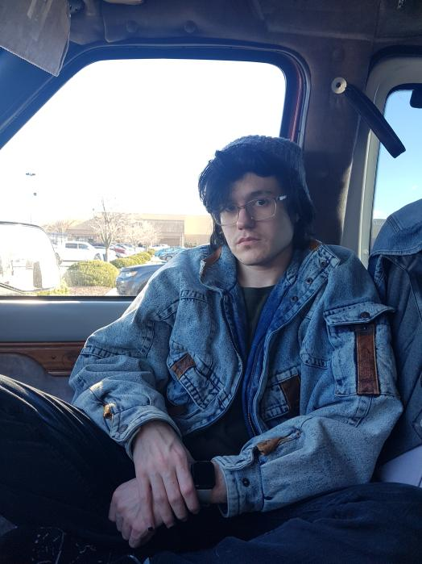

About Me
About Me


At home (in the van)
Visiting Boswell
Both photos taken by my husband.
Coyote Reyne is:
Hi, I'm Coy. You might see me around the 'net as "Merewife".
I started making websites in 2014, and I release music as Merewife on Bandcamp and Spotify. I'm also a photographer and graphic designer.
Contact
You can find me in the OpenBooks Discord server.
More about me
| Name: | Coyote Petrichor Reyne, Coy for short. It rhymes with Kai. Some people call me Yote (two syllables). |
| Known Aliases: | Delta Hart, Azimuth "Azzy" Azure Dawn, Anemone Rhiannon Teal, Skelly, River, Marin Exley, Rain Hart/rainulous. It changes a lot due to reasons I'm smart enough now not to put on a public website. |
| Age: | 25 in earth years. |
| Gender: | I don't participate in gender. |
| Pronouns: | 'Your Grace' (but really, I use xe/xem, they/them, or just he/him.) |
| Interests: | 2000s design/music, photography, vintage technology |
| Influences: | the Waterfalls music video by TLC and Björk's entire career discography |
| Cell phone: | iPhone 13 Pro, green |
| Preferred music player: | iPod classic (7th gen), Zune 30 (brown and green of course) |
| Main computers: | MacBook Pro 14" (2021), Dell Precision 5820 |
| Operating Systems: | macOS 12, iOS 16, Windows 11 |
| Camera of choice: | Leica SL (Typ 601), R8, M4-P, LOMO LC-A, various vintage lenses. |
| Languages spoken: | English, some German |
| Favourite quotes: |
"I see it, I like it, I want it, I got it." - Ariana Grande "Sometimes... things that are expensive... are worse." - Freckle "You just copy everything we do - If I wasn't me I'd copy me too" - 100 gecs |
| Astrological Sign: | Scorpio |
| Eastern Zodiac: | Ox |
| Myers Briggs Type: | INTP |
| Enneagram Type: | Type 8, I think? |
| Politics: | Communist, Gamers Against Weed, Concerned Moms For Ketamine. I think they should put the cocaine back in Coca-Cola.* |
| Religion: | I think that if a witch eats the president that witch should become the president. |
| Favorite Musicians/Bands: | Björk, Aqua, Fleetwood Mac, Stevie Nicks, Phoebe Bridgers, Julien Baker, Mitski, Hozier, 2NE1, Kim Petras, The Knife, Lady Gaga, anyone New Wave. |
| Prefered mode of Transportation: | Being carried. |
| Actual mode of Transportation: | Agnetha, my 2011 SAAB 9-3 Turbo4 sedan. Or my husband's SAAB 9-2x Aero. |
| Previous Vehicles: | A 1995 Ford E150, named SlimJim, who was also my home. A 2019 Chevy Sonic RS, named Knuckles, because it was red. A 2005 BMW 330xi. A 1985 BMW 325i convertible which I sold right before the value went up. |